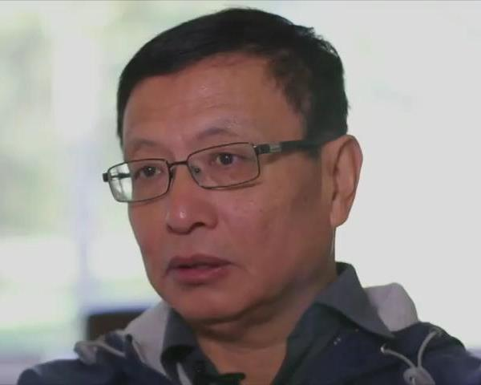

物理是研究我们所在的这个宇宙的学术，必须紧密地扎根在实験结果上。数学则是纯粹的逻辑推论，连它的前提（叫Axiom，公理）都不须与现实有什么关系，所以自然没有实験上的依据。数学界因此对逻辑的严谨早就有絶对的要求，以避免出现像超弦这类胡扯蛋的理论。如此一来，能够出版的论文数目很少，能当上正教授的也就不多；可是每所大学都必须开大一微积分，教学的工作量是很大的。解决这个矛盾的办法，就是雇用讲师。讲师的薪水很低，而且合约是一年期的，每年都必须重新续约，完全没有工作保障。不过会想念数学的人，本来就常有淡薄名利的倾向，薪水再低，只要能安心作学问，还是有人愿意干。
我曾提过成功揭发超弦骗局的Peter Woit，就是在被排挤出物理界后，到Columbia当数学讲师。今天跟大家介绍一下另一位当了十几年数学讲师，最近才成名的人。他是上海人，叫张益唐，生于1955年，十三岁时随父母迁居北京，两年后随母亲下放，种了几年菜，后来回北京到一个制鎻厰当金工。1978年，已经八年没读书的张益唐考上重新开张的北京大学数学系。他后来迷上了数论（Number Theory，即研究整数-尤其是质数-的纯数学学科），可是他的指导教授丁石孙，也就是当时北大的校长，是做代数几何（Algebraic Geometry）的，结果他被强迫跟着做代数几何。
张益唐，他似乎和Newton及Einstein一様，有Asperger syndrome（阿斯伯格综合症），因此有超人的专注能力和记忆力，但是在与人相处上有些困难，不过比起Perelman还算好的。
张益唐虽然对代数几何没有太大的兴趣，但是当北大校长的研究生还是有好处的。1984年，我的台中一中学长莫宗坚（T.T.Moh），刚在前一年升任Purdue（普渡大学）数学系正教授，到北大访问时，请校方推荐做代数几何的学生，于是张益唐很幸运地拿奖学金进了Purdue的博士班。不过或许是因为张益唐的心一直不是真正在代数几何上，两人处得并不愉快。张益唐在1991年毕业后，莫宗坚没有为他找到工作，此后两人也再没有联繫。张益唐在此后的8年，基本上是为中国来的老同学和朋友打打工，包括在Kentucky州的汽车旅馆和Subway快餐店做帐房。1999年，一个北大的老同学介绍他到University of New Hampshire（新罕布夏大学）当数学讲师，这时他已经44岁了。
年復一年教微积分这种早已熟悉的简单题材，当然是很无聊乏味的事；不过好处是教了一两年之后，根本就不须再花时间准备，所以空閒就多了，张益唐开始把大半天都花在图书馆细读最新的数论成果。2003年，张益唐到纽约长岛访友的时候，被介绍给一位在中餐馆打工的小姐， 不久后结了婚；但是太太不喜欢新罕布夏的冷天气，没多久就转战到加州的美容店打工。张益唐一个人住在学校附近，除了上课就是做数学。2007年，他投出一辈子的第一篇论文，试图解决很有名的Landau-Siegel Zeros Conjecture，论文上了预印本（Preprint）的网站，但是张益唐没有投给期刊，因为它是错的；张益唐自己也知道，但是他继续地想这个问题。一直到2010年，他终于决定换一个题目来作，也就是更加有名、也更为重要的（Siegel Zeros有可能是Riemann Hypothesis的反例，如果这反例真的成立，则Riemann Hypothesis会被推翻，而Riemann Hypothesis大概是当前数学界最大最重要的难题；在此我假设Landau-Siegel Zeros Conjecture的解答不决定Riemann Hypothesis的正确性）孪生质数假设（Twin Prime Conjecture）。
数学是个很成熟的学科，容易的题材早就做完了。如果是经过几十代的成百成千天才数学家的努力，仍然解不出来的老问题，其难度可想而知。这种从17、18、19世纪留下来的老问题，最有名的有几十个。在过去这几代里，大约是每十年能解答一个，每次都是惊动全球学术界的大事。上一次有这个层次的问题被解决，是2003年俄国的Grigori Perelman证明了Poincaré conjecture（庞加莱猜想）；再上一次，是1994年英国的Andrew Wiles证明了Fermat's Last Theorem（费马最后定理，亦即a^n+b^n=c^n只有在n=2时才有正整数解）。Twin Prime Conjecture（孪生质数假设，也就是相差只有2的两个连续“孪生”质数有无限多对）就是这个最高等级的超难老问题之一。一个从来没有出版过任何论文的人说要把它解决掉，听来就是痴人说梦。
2013年，58岁的张益唐终于投了他一辈子的第一篇给学术期刊的稿，基本上证明了孪生质数假设。我说“基本上”，是因为他只做了最大的突破，发明了一个新的、很强大的研究质数的方法，并用它来证明有无限多对质数相差不到70000000。从70000000要压缩到2，还需要几百篇繁琐、没有什么新意，却又是必要的论文。学术界戏称这种跟追他人突破的小论文为“Ambulance Chaser”（“追救护车的”，原本用来讥笑急着找生意的律师；我当初愿意离开学术界，有部分原因是因为理解到絶大多数的学术论文都是追救护车的），而张益唐是不屑做这种事的；他已经急着回头做Landau-Siegel Zeros Conjecture了。
学术界评价学者非常困难，用出版的记录来决定一个人的成就只是不得已的最不坏的（Least Bad）手段；当然，絶大部分的人必须靠追救护车来出论文，其结果是遗珠的很多。连数学这様纯逻辑的学科，最近20年的两个大突破都是由圈（指正规的研究职位）外的无名小卒（即张益唐和Grigori Perelman）所完成的。我很佩服他们的执着，也很庆幸他们有了美好的结局（张益唐直升了正教授，而且成为台湾中研院的院士；Perelman却拒絶了一切金銭和职业上的回报，辞职躲回母亲家，他的结局是否美好是有疑问的）。但是在学术界边缘工作的几十万讲师和其他工作人员，必然也有一些是怀才不遇的，大部分却不会那么幸运而一举成名。我只能说，人生本就不是公平的。
发表日期 : 2015-02-01 04:29
小李马刀 留言 :
王孟源 回复:
jeffchang 留言 :
王孟源 回复: